Courtois NeuroMod
L'Intelligence artificielle dépasse maintenant les performances humaines sur certaines tâches complexes.
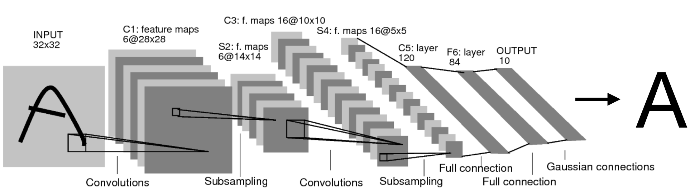
Tiré de Lecun, Y., Bottou, L., Bengio, Y., Haffner, P., 1998. Gradient-based learning applied to document recognition. Proc. IEEE 86, 2278–2324.
Les modèles développés en neurosciences computationnelles visent un réalisme extrême, mais n'effectuent pas de tâches...
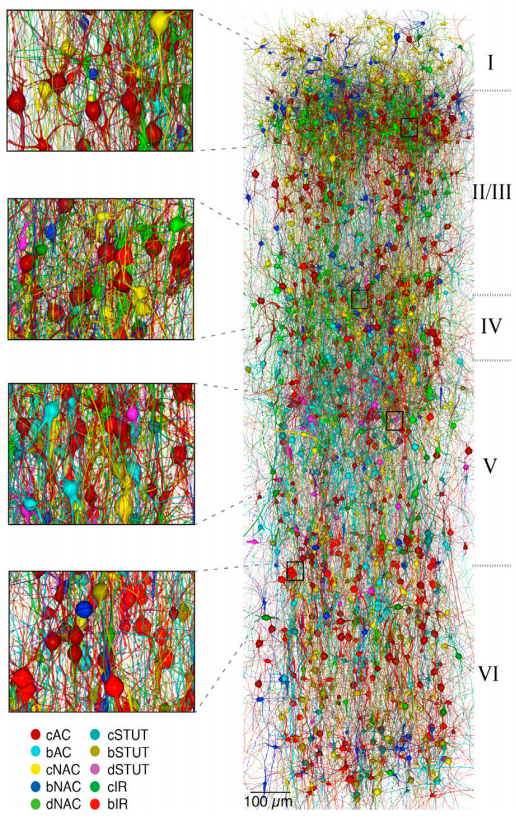
Human brain project: Budget 1B euros.
30k neurones simulés ...
... parmi 200M neurones dans le cortex du rat.
Tiré de Markram et al., 2015.
Reconstruction and Simulation of Neocortical Microcircuitry.
Cell 163, 456–492.
Les réseaux artificiels profonds semblent
partager certaines caractéristiques
des réseaux biologiques.
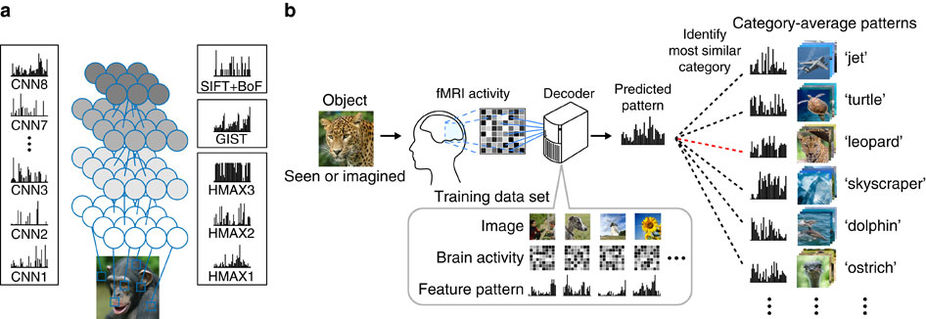
Horikawa, T., Kamitani, Y., 2017. Generic decoding of seen and imagined objects using hierarchical visual features. Nat. Commun. 8, 15037.
Pourtant, les modèles d'IA convergent souvent vers des solutions non-généralisables.
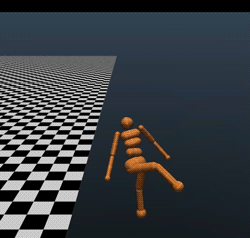 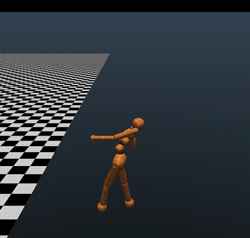 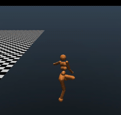 http://www.argmin.net/2018/03/20/mujocoloco/
Objectif général
Quatre domaines cognitifs
Jeux vidéos
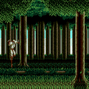
Langage
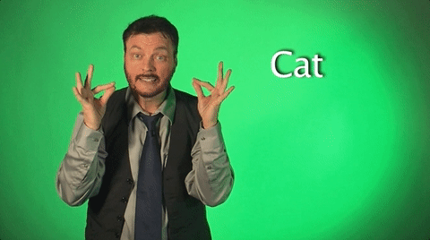
Mémoire
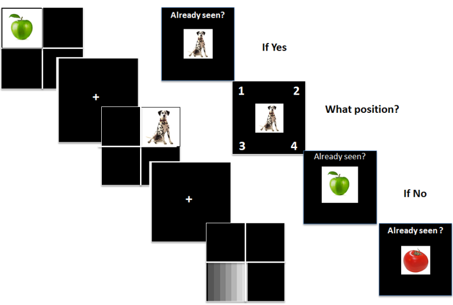
Émotions

Deux cohortes cliniques
Aînés présentant des troubles cognitifs
Individus présentant des troubles psychotiques
Extreme scanning
6 subjects
100 MRI visits and 20 MEG visits / year
Total 600 visits / subject over 5 years
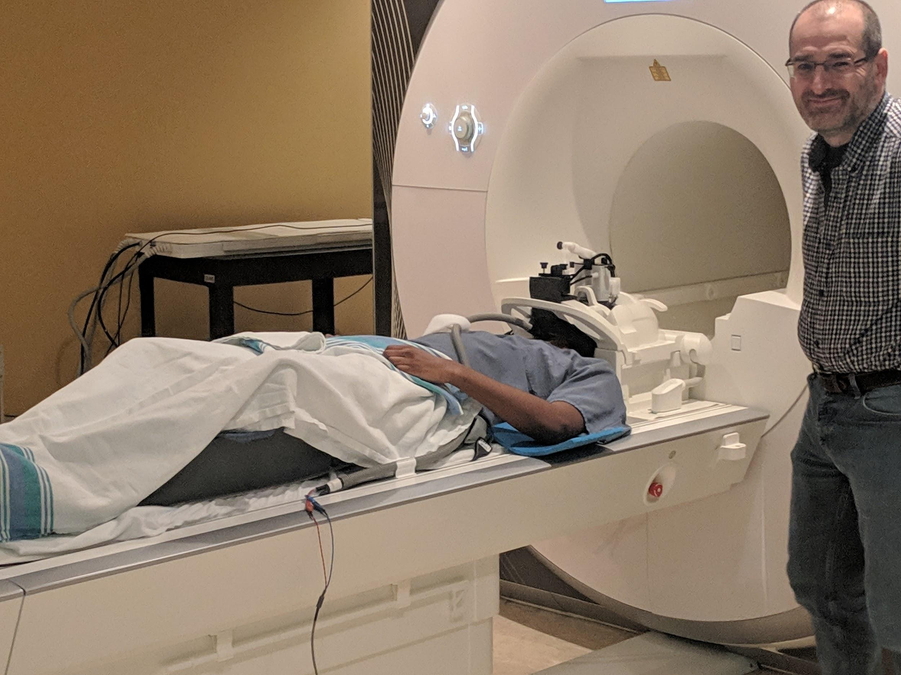
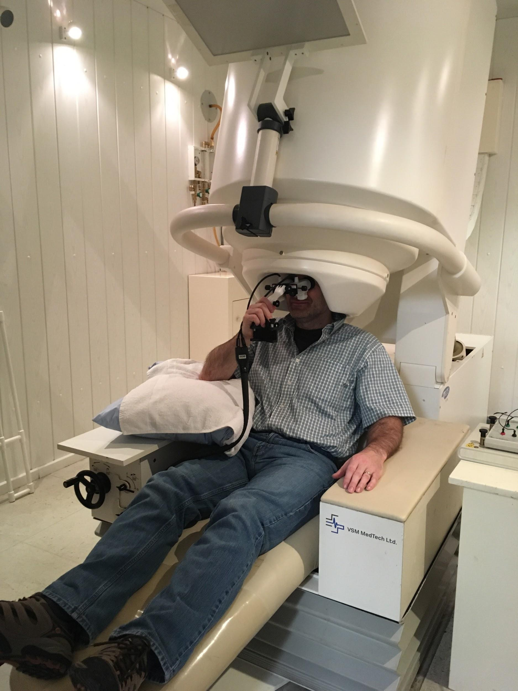
Deep scanning
Physiological measures
Eye tracking
Headcases
Video game controller
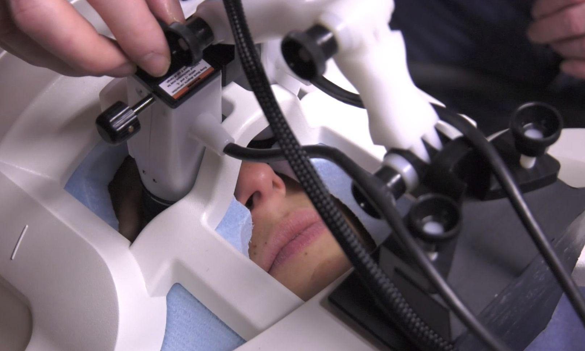
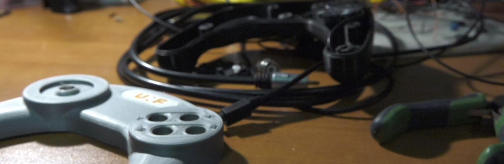
More on the project (video in French)
https://tiny.cc/neuromodExpected outcomes
- Unprecedented quantities of individual functional data.
- A new way to train IA models, with better performance and generalizibilty in challenging tasks.
- A new tool for computational cognitive neurosciences, directly applicable in large clinical cohorts.
The team
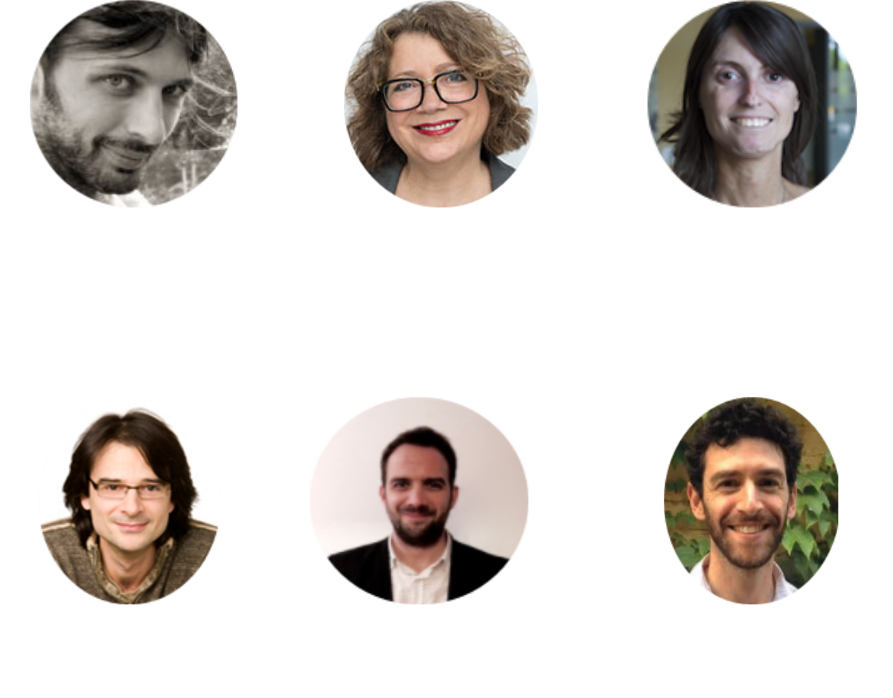